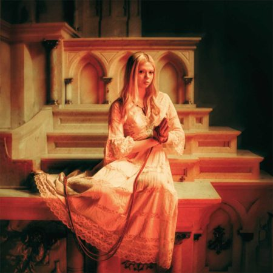

Agenda de recitales

Cupido en teatro Vorterix
19/06/2025
Dum Chica y Rancixs Club en Córdoba
19/06/2025
Liapsis en Humboldt
19/06/2025
Críticas de discos

Critica de bar scorpios: Blair pone voz a los fantasmas de la culpa y el deseo
De luanne Rodas Genez
Critica de cine

Crítica de destino final - lazos de sangre: Un festival de terror, comedia, gore y diversion
De julieta Aiello
Crítica de Harta: Un relato sororo con exceso de golpes bajos
De julieta Aiello
Indie ayer